import pandas as pd
import numpy as np
import seaborn as sns
import matplotlib.pyplot as plt
import missingno as msnoSeason’s Screenings: Exploring Trends in Holiday Movies
INFO 523 - Project 1
Abstract
The provided dataset is a structured compilation of films with a central theme or element of holidays, spanning almost a century from 1929 to 2022. The dataset includes various attributes such as the original title of the movie, its release year, the runtime in minutes, the genre(s), a simplified title, the average rating, the number of votes the movie received, and boolean indicators for its association with major holidays like Christmas, Hanukkah, Kwanzaa, and whether it is related to a holiday in general. We performed exploratory data analysis on the dataset to discover trends and interesting insights and did some further analysis to answer the following two questions: How have popular movies been changing over the decades? What kind of holiday movies earn the most money?
How have popular movies changed over the decades?
Introduction
The objective of the proposed analysis is to explore the evolution of popular holiday movies across decades. The focus will be on movies with average ratings in the upper two quartiles, which suggests a positive reception from viewers. This subset of data is essential to understand the shifting preferences of the audience in terms of genre, movie duration, and title length. By isolating films that are more favored, we aim to identify patterns that signify what attributes contribute to the success and popularity of holiday movies.
To answer this question, we will employ specific parts of the dataset that include the title, release year, genre, duration, and ratings of each movie. An additional variable—Title Length—will be calculated to examine the correlation between the length of a movie’s title and its popularity. Rating quartiles will be used to classify movies into different levels of reception. Furthermore, the Genre Count will provide insights into the complexity and variety within holiday movies. This analysis is not just a reflection of cinematic trends but also serves to illuminate the changing cultural landscape surrounding holiday themes in films, thus offering valuable information to both film enthusiasts and industry analysts.
Approach
To address the question of how popular holiday movies have changed over the decades, our approach will involve a blend of descriptive statistics and visual analysis. Firstly, we will perform quartile analysis to categorize movies based on their average ratings. This method segments the data into four equal parts, allowing us to focus specifically on movies in the 3rd to 4th quartile range, which are deemed popular by viewers. Quartile analysis is an effective way to filter the dataset and ensure that the subsequent trends we observe are representative of films that have been well-received, providing a clear picture of what attributes are associated with higher ratings.
For the visual analysis, two types of plots will be created. The first plot will be a multi-faceted bar chart that illustrates the distribution of genres within the top quartiles over different decades. By using color mapping, we will be able to distinguish between genres within the same time frame easily, which will enable us to identify any shifts in genre popularity or diversification trends. The second plot will be a scatter plot correlating movie duration and average rating, with movies also color-coded based on their title length. This will allow us to observe if there’s a preferred movie length that correlates with higher ratings, and whether longer or shorter movie titles are trending among the more popular films. The use of facets will further enhance this analysis by breaking down these trends by decade, giving us a temporal perspective on how these relationships have evolved over time. Both methods combined will provide a comprehensive understanding of the dynamics of popular holiday movies, highlighting changes in consumer preferences and industry patterns.
Analysis
df = pd.read_csv('data/holiday_movies.csv')
# display the first five rows of the dataset
df.head()| tconst | title_type | primary_title | original_title | year | runtime_minutes | genres | simple_title | average_rating | num_votes | christmas | hanukkah | kwanzaa | holiday | |
|---|---|---|---|---|---|---|---|---|---|---|---|---|---|---|
| 0 | tt0020356 | movie | Sailor's Holiday | Sailor's Holiday | 1929 | 58.0 | Comedy | sailors holiday | 5.4 | 55 | False | False | False | True |
| 1 | tt0020823 | movie | The Devil's Holiday | The Devil's Holiday | 1930 | 80.0 | Drama,Romance | the devils holiday | 6.0 | 242 | False | False | False | True |
| 2 | tt0020985 | movie | Holiday | Holiday | 1930 | 91.0 | Comedy,Drama | holiday | 6.3 | 638 | False | False | False | True |
| 3 | tt0021268 | movie | Holiday of St. Jorgen | Prazdnik svyatogo Yorgena | 1930 | 83.0 | Comedy | holiday of st jorgen | 7.4 | 256 | False | False | False | True |
| 4 | tt0021377 | movie | Sin Takes a Holiday | Sin Takes a Holiday | 1930 | 81.0 | Comedy,Romance | sin takes a holiday | 6.1 | 740 | False | False | False | True |
# check data info
df.info()<class 'pandas.core.frame.DataFrame'>
RangeIndex: 2265 entries, 0 to 2264
Data columns (total 14 columns):
# Column Non-Null Count Dtype
--- ------ -------------- -----
0 tconst 2265 non-null object
1 title_type 2265 non-null object
2 primary_title 2265 non-null object
3 original_title 2265 non-null object
4 year 2265 non-null int64
5 runtime_minutes 2076 non-null float64
6 genres 2233 non-null object
7 simple_title 2265 non-null object
8 average_rating 2265 non-null float64
9 num_votes 2265 non-null int64
10 christmas 2265 non-null bool
11 hanukkah 2265 non-null bool
12 kwanzaa 2265 non-null bool
13 holiday 2265 non-null bool
dtypes: bool(4), float64(2), int64(2), object(6)
memory usage: 185.9+ KBThe data has 14 columns with varying data types.
# check data shape
df.shape(2265, 14)The data has 2265 rows and 14 columns.
new_genres = pd.read_csv('data/holiday_movie_genres.csv')
# display the first five rows of the dataset
new_genres.head()| tconst | genres | |
|---|---|---|
| 0 | tt0020356 | Comedy |
| 1 | tt0020823 | Drama |
| 2 | tt0020823 | Romance |
| 3 | tt0020985 | Comedy |
| 4 | tt0020985 | Drama |
Exploratory Data Analysis
We performed exploratory data analysis to discover insights and trends in the dataset based on the variables. This step helps to uncover some interesting patterns to understand the data better.
# summary statistics
print(df['year'].describe())
# histogram
sns.displot(data = df, x = "year",
bins = 15, height = 5, aspect = 8/5)
plt.title('Histogram of the Year of Movies')
plt.show()count 2265.000000
mean 2008.096247
std 17.466968
min 1929.000000
25% 2003.000000
50% 2015.000000
75% 2020.000000
max 2023.000000
Name: year, dtype: float64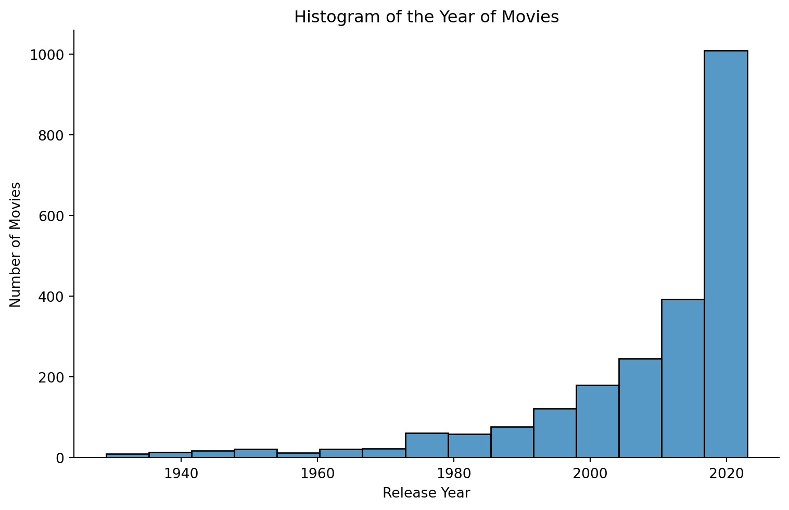
The histogram above shows an interesting insight: a significant number of movies were released between the year 2000 and 2020.
print(df['runtime_minutes'].describe())
# histogram
sns.displot(data = df, x = "runtime_minutes",
bins = 15, height = 5, aspect = 8/5)
plt.title('Histogram of the Runtime Minutes of Movies')
plt.show()count 2076.000000
mean 78.441233
std 26.603105
min 1.000000
25% 68.000000
50% 85.000000
75% 90.000000
max 288.000000
Name: runtime_minutes, dtype: float64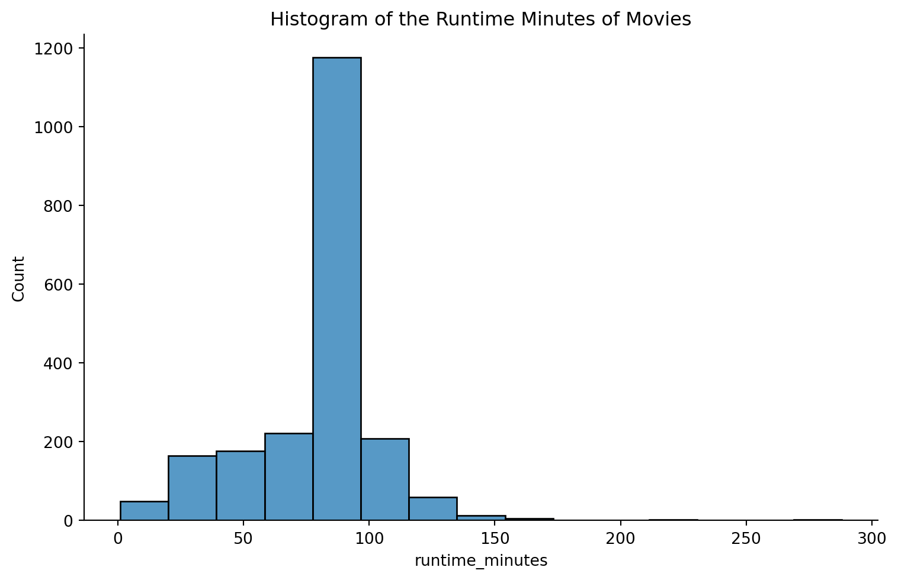
The histogram above shows that most movies have a run time between 50 and 100 minutes. There are more movies that are slightly below the 100 minutes mark as seen in the bar spike.
print(df['average_rating'].describe())
# histogram
sns.displot(data = df, x = "average_rating",
bins = 15, height = 5, aspect = 8/5)
plt.title('Histogram of the Average Rating of Movies')
plt.show()count 2265.000000
mean 6.062428
std 1.239239
min 1.000000
25% 5.400000
50% 6.100000
75% 6.800000
max 10.000000
Name: average_rating, dtype: float64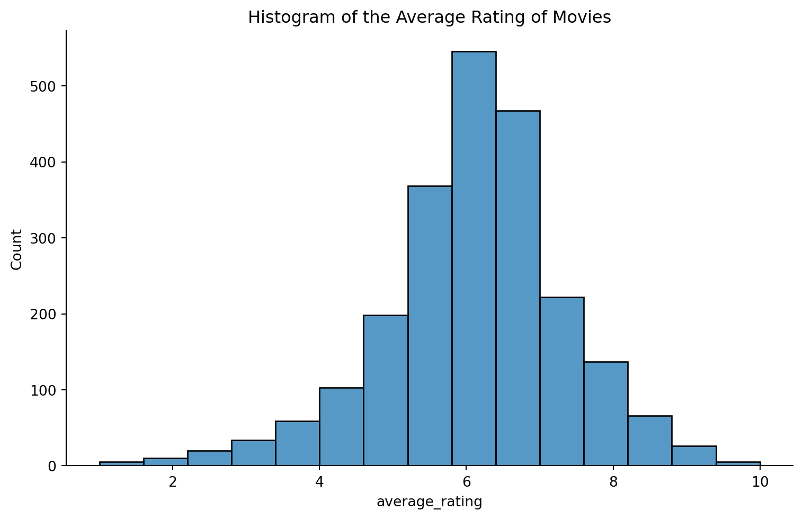
- The maximum average rating is 10 and the mimimum is 1. The median is 6.1.
- The average rating of movies from the histogram appears to be normally distributed.
print(df.describe(exclude = [np.number]))
# bar plot of top 10 movie titles
top_10_movie_title = df['original_title'].value_counts()[:10]
top_10_movie_title.plot(kind='barh',figsize=(10,8))
plt.title('Top 10 Movie Titles')
plt.show()
# bar plot for title type
title_type = df['title_type'].value_counts()
title_type.plot(kind='bar',figsize=(10,8))
plt.title('Top 10 Movie Title Types')
plt.xticks(rotation=0)
plt.show()
# bar plot for genres
top_10_genres = df['genres'].value_counts()[:10]
top_10_genres.plot(kind='barh',figsize=(10,8))
plt.title('Top 10 Movie Genres')
plt.show() tconst title_type primary_title original_title genres \
count 2265 2265 2265 2265 2233
unique 2265 3 2081 2120 213
top tt0020356 tvMovie A Christmas Carol A Christmas Carol Comedy
freq 1 1206 38 36 182
simple_title christmas hanukkah kwanzaa holiday
count 2265 2265 2265 2265 2265
unique 2073 2 2 2 2
top a christmas carol True False False False
freq 38 1929 2255 2263 1935 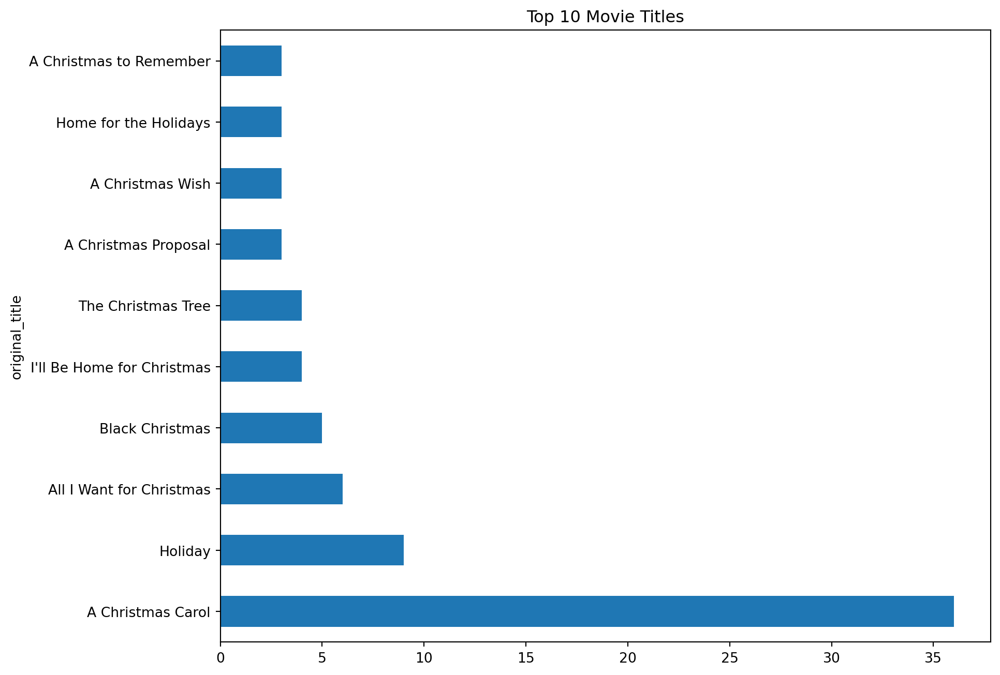
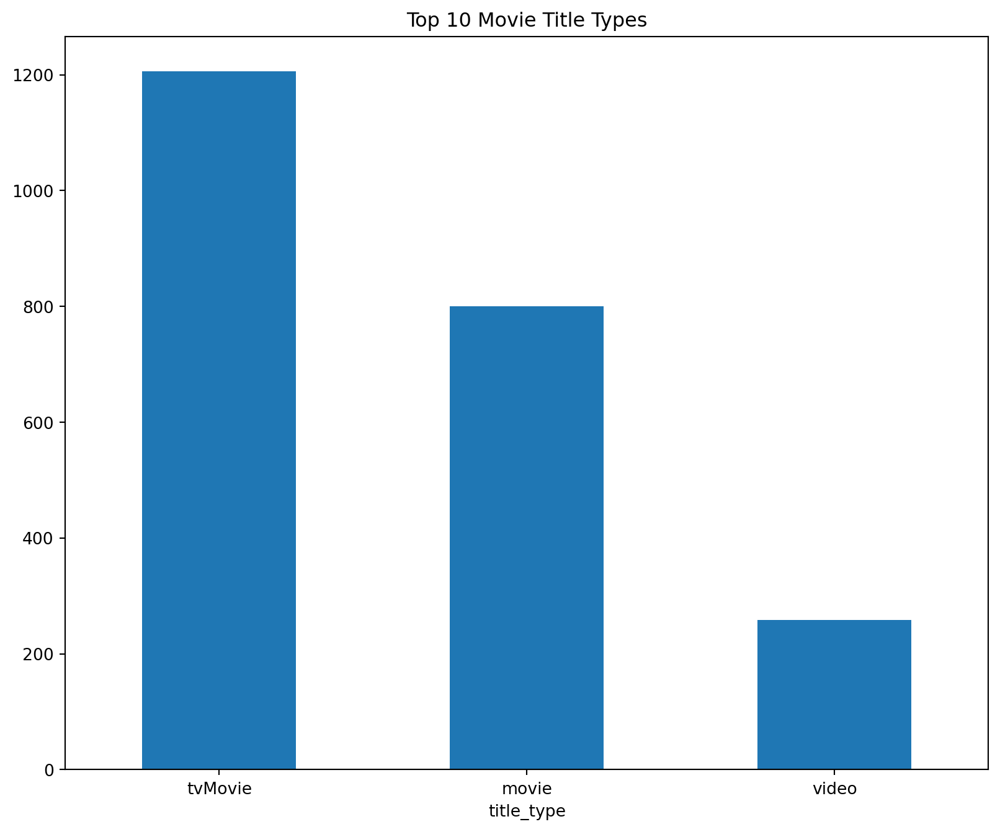
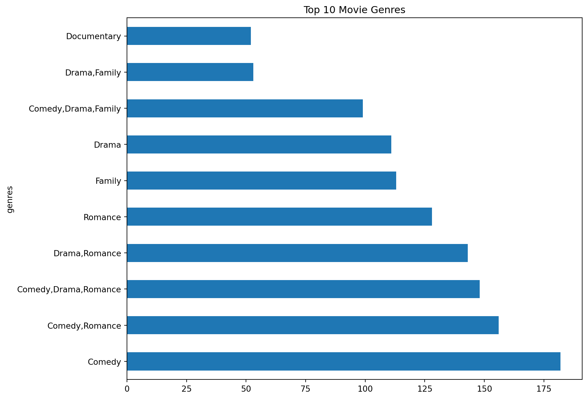
From the plots bar plots above, we can observe the following: * The most popular holiday movie title is “A Christmas Carol”. * tvMovie is the most popular title type. * Comedy is the most popular holiday movie genre
# association between runtime_minutes and num_votes
sns.set_theme(style = "whitegrid")
sns.scatterplot(data = df, x = "runtime_minutes", y = "num_votes")
plt.show()
# association between runtime_minutes and average_rating
sns.set_theme(style = "whitegrid")
sns.scatterplot(data = df, x = "runtime_minutes", y = "average_rating")
plt.show()
# association between year and runtime_minutes
sns.set_theme(style = "whitegrid")
sns.scatterplot(data = df, x = "year", y = "runtime_minutes")
plt.show()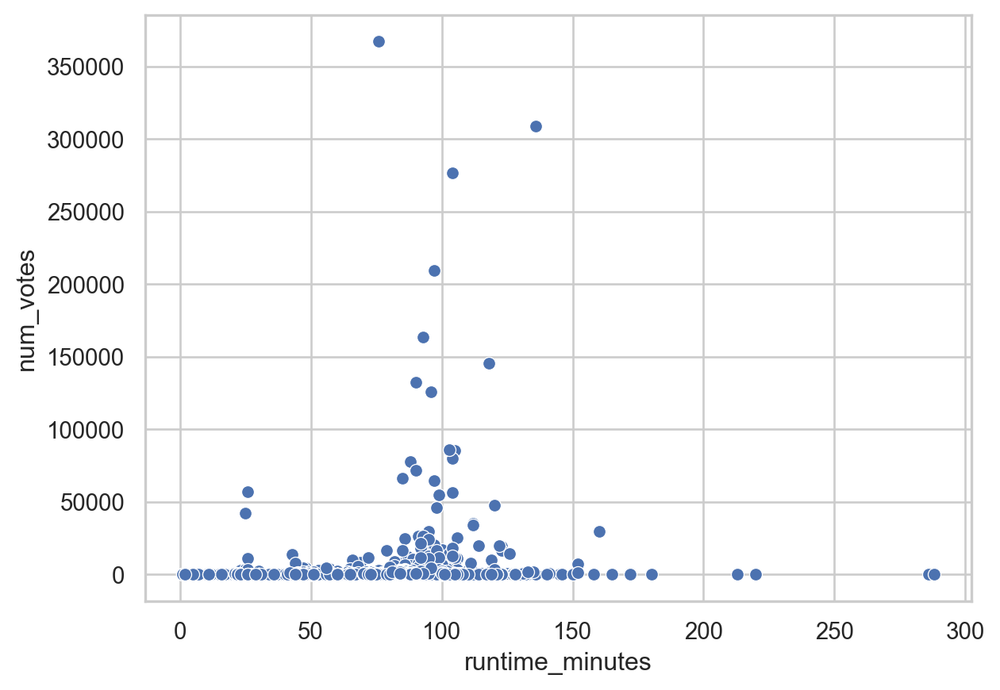
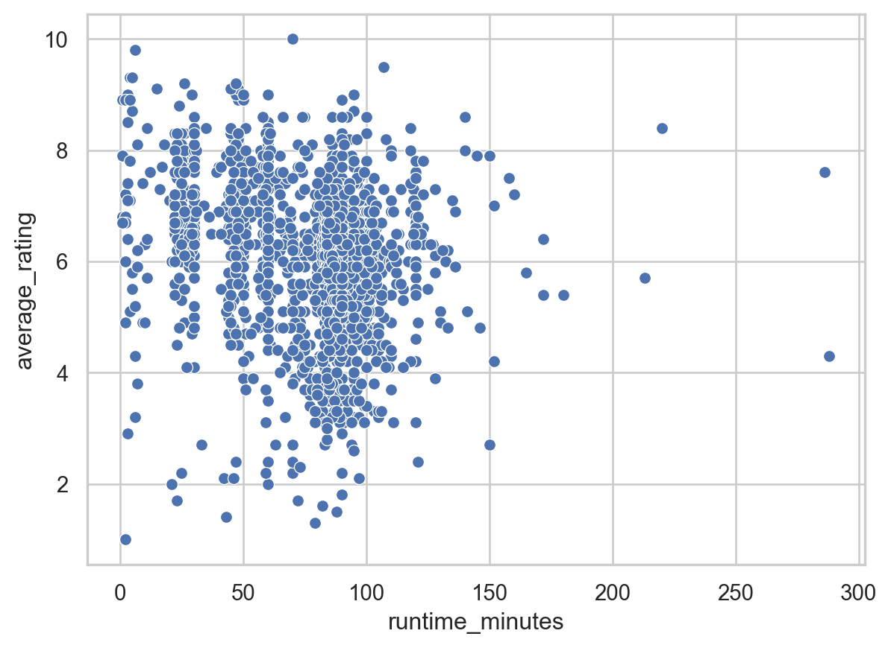
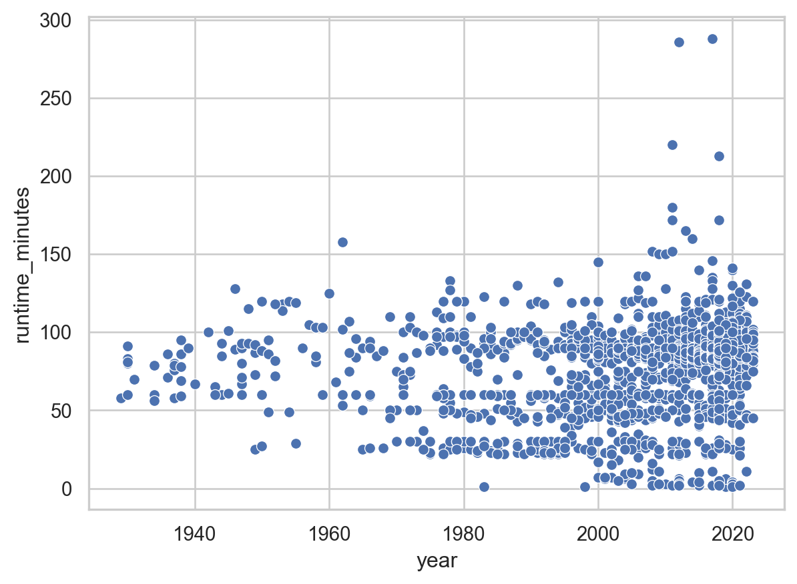
From the scatter plots above, we can conclude that: * There is no distinct pattern to show a relationship between the runtime_minutes and num_votes * There is no distinct pattern to show a relationship between the runtime_minutes and average_rating * There is no distinct pattern to show a relationship between the year and runtime_minutes
Data Preprocessing
Data preprocessing involves cleaning and transforming the data in a presentable and understandable format for further analysis. This step ensures that the quality of data is improved before answering pre-defined questions.
# Check for missing values
df.isnull().sum()
msno.bar(df, figsize = (7, 5), fontsize = 10)
plt.tight_layout()
plt.show()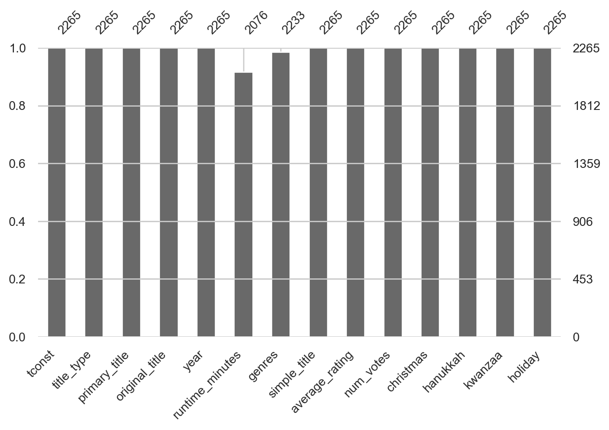
Runtime minutes and genres are the only two variables with missing values.
# Drop rows where 'genres' is missing
df_cleaned = df.dropna(subset=['genres']).copy()
# Impute missing values in 'runtime_minutes' with the median of the non-missing values
median_runtime = df_cleaned['runtime_minutes'].median()
df_cleaned.loc[:, 'runtime_minutes'] = df_cleaned['runtime_minutes'].fillna(median_runtime)
# Verify the imputation by checking if there are still missing values in 'runtime_minutes'
missing_after_imputation = df_cleaned.isnull().sum()
print(f"Missing Value after modification : {missing_after_imputation}")Missing Value after modification : tconst 0
title_type 0
primary_title 0
original_title 0
year 0
runtime_minutes 0
genres 0
simple_title 0
average_rating 0
num_votes 0
christmas 0
hanukkah 0
kwanzaa 0
holiday 0
dtype: int64# Calculate the length of each movie title using .loc to safely modify the DataFrame
df_cleaned.loc[:, 'title_length'] = df_cleaned['original_title'].apply(len)
# Determine the rating quartile for each movie
df_cleaned.loc[:, 'rating_quartile'] = pd.qcut(df_cleaned['average_rating'], 4, labels=False)
# Count the number of genres per movie, handling NaN if present
df_cleaned.loc[:, 'genre_count'] = df_cleaned['genres'].apply(lambda x: len(x.split(',')) if pd.notnull(x) else 0)
# Filter to include only movies in the 3rd and 4th rating quartiles and use .copy() for top_movies
top_movies = df_cleaned[df_cleaned['rating_quartile'] >= 2].copy()
# Organize the data by decades using .loc to avoid SettingWithCopyWarning
top_movies.loc[:, 'decade'] = (top_movies['year'] // 10) * 10
#Merge the new genre dataset with the existing cleaned DataFrame
merged_df = pd.merge(top_movies, new_genres, on = 'tconst', how = 'left')
# display the first five rows of top_movies
top_movies.head()| tconst | title_type | primary_title | original_title | year | runtime_minutes | genres | simple_title | average_rating | num_votes | christmas | hanukkah | kwanzaa | holiday | title_length | rating_quartile | genre_count | decade | |
|---|---|---|---|---|---|---|---|---|---|---|---|---|---|---|---|---|---|---|
| 2 | tt0020985 | movie | Holiday | Holiday | 1930 | 91.0 | Comedy,Drama | holiday | 6.3 | 638 | False | False | False | True | 7 | 2 | 2 | 1930 |
| 3 | tt0021268 | movie | Holiday of St. Jorgen | Prazdnik svyatogo Yorgena | 1930 | 83.0 | Comedy | holiday of st jorgen | 7.4 | 256 | False | False | False | True | 25 | 3 | 1 | 1930 |
| 5 | tt0021381 | movie | Sinners' Holiday | Sinners' Holiday | 1930 | 60.0 | Adventure,Crime,Romance | sinners holiday | 6.3 | 688 | False | False | False | True | 16 | 2 | 3 | 1930 |
| 6 | tt0023039 | movie | Husband's Holiday | Husband's Holiday | 1931 | 70.0 | Drama | husbands holiday | 6.4 | 27 | False | False | False | True | 17 | 2 | 1 | 1930 |
| 9 | tt0025037 | movie | Death Takes a Holiday | Death Takes a Holiday | 1934 | 79.0 | Drama,Fantasy,Romance | death takes a holiday | 6.9 | 2361 | False | False | False | True | 21 | 3 | 3 | 1930 |
# Count the frequency of each genre within the 3rd and 4th rating quartiles
genre_counts = merged_df['genres_y'].value_counts()
plt.figure(figsize=(12, 8))
sns.barplot(x = genre_counts.values, y = genre_counts.index, hue = genre_counts.index, palette = 'viridis', legend = False)
plt.xlabel('Number of Movies')
plt.ylabel('Genre')
plt.title('Most Common Genres Among Top-Rated Holiday Movies')
plt.show()From the genre distribution bar plot, we can observe that Comedy and Drama are the most common genres among top-rated holiday movies. This predominance might suggest that audiences tend to prefer lighter and more emotionally resonant stories during holiday seasons, which aligns with the festive and familial spirit of such times. Family and Romance genres follow, which further emphasizes the desire for movies that bring people together, reflecting typical holiday themes centered around love, family, and togetherness.
# Create a boxplot to visualize the distribution of movie runtimes across different rating quartiles
# 'x' specifies the categorical variable 'rating_quartile' for the x-axis
# 'y' specifies the numerical variable 'runtime_minutes' for the y-axis
plt.figure(figsize=(12, 8))
sns.boxplot(x = "rating_quartile", y = "runtime_minutes", data = top_movies)
plt.xlabel("Rating Quartile")
plt.ylabel("Runtime(min)")
plt.title("Rating Quartile vs Runtime in Movies")
plt.show()The plot showcasing the relationship between movie runtime and rating quartile indicates that there isn’t a strong preference for movie length within the top rating quartiles. While there is a concentration of movies with runtimes around 100 minutes (typical for standard feature films), the presence of highly-rated movies with longer runtimes suggests that a film’s duration is less significant to its reception compared to other factors such as story, acting, and direction. However, the spread of runtimes in the 3rd quartile is narrower than in the 4th, hinting that exceptionally well-received movies might have a tighter consistency in their duration.
# Create a line plot to visualize the relationship between the length of movie titles and their average ratings
# 'x' specifies the numerical variable 'title_length' for the x-axis
# 'y' specifies the numerical variable 'average_rating' for the y-axis
plt.figure(figsize=(12, 8))
sns.lineplot(x = "title_length", y = "average_rating", data = top_movies, color = "purple", errorbar = None)
x_intervals = np.arange(0, max(top_movies['title_length']) + 10, 10)
plt.xticks(x_intervals)
plt.xlabel("Title Length")
plt.ylabel("Average Rating")
plt.title("Title Length vs Average Rating in Movies")
plt.show()The line plot correlating title length with average rating shows a more erratic relationship. While no clear trend is discernible, there appears to be a slight tendency for movies with shorter titles to have higher ratings, although there are exceptions at various points. This might imply that conciseness in a title could be associated with a film’s memorability or marketing effectiveness, but the numerous outliers make it difficult to draw a definitive conclusion.
What kind of holiday movies earn the most money?
Introduction
- We will look at the correlations between movie features (such as year of production, duration, length of title, rating, genres, and type of holiday) and the amount of earnings the movie generated. For that, we will supplement the existing dataset with box office information using IMDb’s API. These observations may be useful in developing a model for estimating the investment worthiness of a movie (whether in production stage or adding an existing movie to a portfolio).
Approach
- At first glance, the tconst column in the dataset may seem redundant. After all, we have the indices, why would we need other identifiers? These variables become useful when we need to get additional data about the movies. Using IMDB’s API, we will populate a new column called earnings. It will allow us to answer our question and make additional useful observations.
Analysis
- In order to not expose the API key and not to waste many minutes of time on real-time execution, the code below is not executable. Instead, we will generate the earnings column once, update a copy of our dataset and have it readily available in the /data folder. The function below does just that: using the tconst variable, it makes a call to IMDb’s API and returns the gross movie earnings.
import json
import boto3
def get_earnings(tconst)
# Instantiate DataExchange client
CLIENT = boto3.client('dataexchange', region_name='us-east-1')
DATA_SET_ID = '<Dataset ID>'
REVISION_ID = '<Revision ID>'
ASSET_ID = '<Asset ID>'
API_KEY = '<API Key>'
query = """
{title(id: tconst) {
# Get the international opening weekend gross for WALL·E
openingWeekendGross(boxOfficeArea: INTERNATIONAL) {
gross {
total {
amount
currency
}
}
# Get the date of the opening weekend end date
weekendEndDate
}
}
}
"""
METHOD = 'POST'
PATH = '/v1'
response = CLIENT.send_api_asset(
DataSetId=DATA_SET_ID,
RevisionId=REVISION_ID,
AssetId=ASSET_ID,
Method=METHOD,
Path=PATH,
Body=BODY,
RequestHeaders={
'x-api-key': API_KEY
},
)
return response['Data']['gross']Disclaimer: IMDb’s API is extremely pricey, so we do not make actual calls, but rather simulate the data for demonstrative purposes. However, all the shown functions and actions have been carefully crafted in accordance with IMDb’s API documentation. They will work provided a valid API key
We load the data in and convert the values into millions of USD by dividing every value by 1,000,000. Then we will proceed to explore a few relationships to see if any features in our dataset correlate to earnings.
df_earnings = pd.read_csv('data/holiday_movies_earnings.csv')
# earnings in million dollars
df_earnings['earnings'] = df_earnings['earnings'] // 1000000
df_earnings.head()| Unnamed: 0.1 | Unnamed: 0 | tconst | title_type | primary_title | original_title | year | runtime_minutes | genres | simple_title | average_rating | num_votes | christmas | hanukkah | kwanzaa | holiday | earnings | |
|---|---|---|---|---|---|---|---|---|---|---|---|---|---|---|---|---|---|
| 0 | 0 | 0 | tt0020356 | movie | Sailor's Holiday | Sailor's Holiday | 1929 | 58.0 | Comedy | sailors holiday | 5.4 | 55 | False | False | False | True | 3.0 |
| 1 | 1 | 1 | tt0020823 | movie | The Devil's Holiday | The Devil's Holiday | 1930 | 80.0 | Drama,Romance | the devils holiday | 6.0 | 242 | False | False | False | True | 4.0 |
| 2 | 2 | 2 | tt0020985 | movie | Holiday | Holiday | 1930 | 91.0 | Comedy,Drama | holiday | 6.3 | 638 | False | False | False | True | 18.0 |
| 3 | 3 | 3 | tt0021268 | movie | Holiday of St. Jorgen | Prazdnik svyatogo Yorgena | 1930 | 83.0 | Comedy | holiday of st jorgen | 7.4 | 256 | False | False | False | True | 23.0 |
| 4 | 4 | 4 | tt0021377 | movie | Sin Takes a Holiday | Sin Takes a Holiday | 1930 | 81.0 | Comedy,Romance | sin takes a holiday | 6.1 | 740 | False | False | False | True | 74.0 |
data_copy = df_earnings.copy()
averages = data_copy.groupby('year')['earnings'].mean()
scatter = sns.scatterplot(data=averages.to_frame(), x = "year", y = "earnings")
labels = scatter.set(xlabel = "Year", ylabel = "Earnings (in mln USD)", title = "Year-earnings relationship")
plt.show()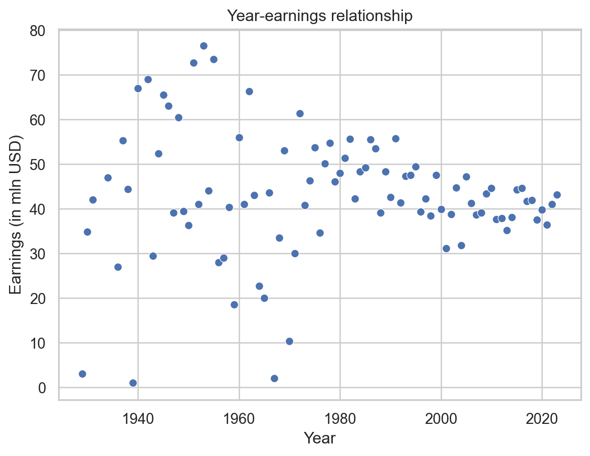
From the plot above, we can observe that there are more outliers before 1980. There are both extremely high earners and movies that made very little. There is less data on older movies, so this information has to be taken with a grain of salt. It could be simply a result of too few datapoints.
data_copy = df_earnings.copy()
averages = data_copy.groupby('average_rating')['earnings'].mean()
scatter = sns.scatterplot(data=averages.to_frame(),x = "average_rating", y = "earnings")
labels = scatter.set(xlabel ="Rating", ylabel = "Earnings (in mln USD)", title = "Rating-earnings relationship")
plt.show()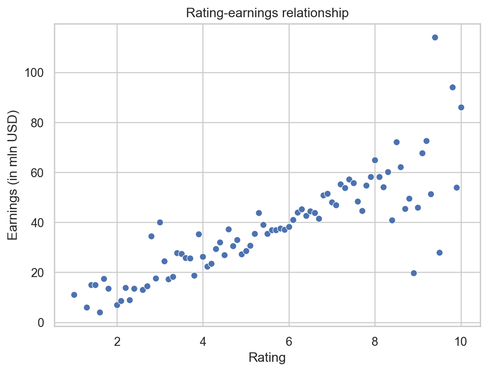
As we may intuitively expect from the above plot, there indeed seems to be a correlation between the average rating of a movie and its earnings. The more people like the movie, the more tickets it sells.
# Merge the genre data with the earnings data on the common key (assuming it's 'tconst' here)
merged_data = pd.merge(new_genres, df_earnings, on='tconst', how='inner')
# Split the genres into lists if they're combined in a single string, assuming they're separated by commas
merged_data['genres_list'] = merged_data['genres_y'].str.split(',')
# Explode the DataFrame so each genre gets its own row
merged_data_exploded = merged_data.explode('genres_list')
# Calculate the average earnings for each genre
average_earnings_by_genre = merged_data_exploded.groupby('genres_list')['earnings'].mean().reset_index()
# Create a bar plot to show average earnings by genre
plt.figure(figsize=(12, 8))
sns.barplot(x='earnings', y='genres_list', data=average_earnings_by_genre.sort_values('earnings', ascending=False))
plt.xlabel('Average Earnings (in million USD)')
plt.ylabel('Genre')
plt.title('Average Earnings by Movie Genre')
plt.xticks(rotation=45)
plt.show()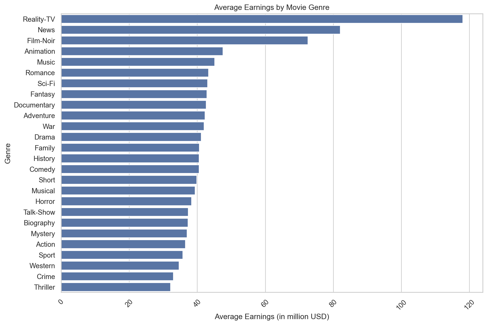
The chart displays a range of genres from “Reality-TV” at the top, suggesting the highest average earnings, to “Thriller” at the bottom, indicating the lowest earnings within this visual.
# Merge the data on a common key, let's say 'tconst' which should be present in both dataframes
merged_data1 = pd.merge(df[['tconst', 'runtime_minutes']], df_earnings[['tconst', 'earnings']], on='tconst', how='inner')
# Now that we have a merged DataFrame with runtime and earnings, we can group by runtime and calculate average earnings
duration_earnings = merged_data1.groupby('runtime_minutes')['earnings'].mean().reset_index()
# Create a scatter plot to visualize the relationship between movie duration and average earnings
plt.figure(figsize=(12, 8))
scatter = sns.scatterplot(x="runtime_minutes", y="earnings", data=duration_earnings)
labels = scatter.set(xlabel="Runtime Minutes", ylabel="Earnings (in million USD)", title="Runtime-Earnings Relationship")
plt.show()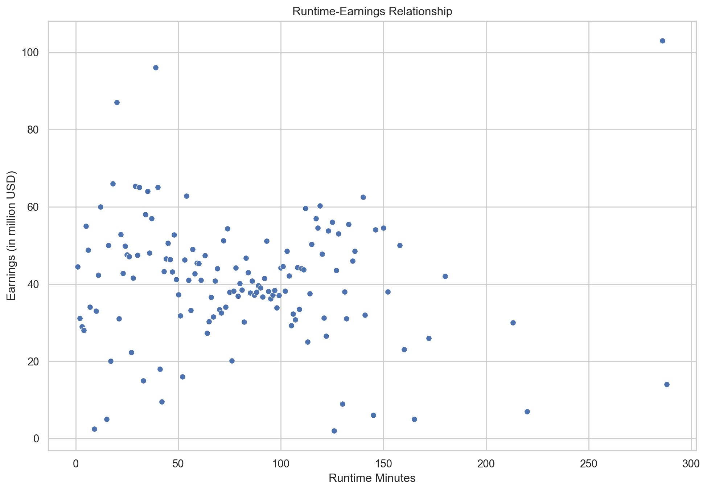
There does not appear to be a strong linear relationship between the runtime of a movie and its earnings. The scatter plot does not indicate a clear trend that would suggest longer or shorter movies earn more money consistently.
# Initialize an empty list to store average earnings by holiday type
holiday_earnings_list = []
# Calculate the average earnings for each holiday type
for holiday in ['christmas', 'hanukkah', 'kwanzaa', 'holiday']:
# Filter the DataFrame to include only movies associated with the holiday
holiday_df = merged_data[merged_data[holiday] == True]
# Calculate the mean earnings for the holiday
average_earnings = holiday_df['earnings'].mean()
# Create a dictionary of the results and append to the list
holiday_earnings_list.append({'Holiday Type': holiday, 'Average Earnings': average_earnings})
# Convert the list of dictionaries to a DataFrame
holiday_earnings = pd.DataFrame(holiday_earnings_list)
# Convert the 'Average Earnings' to millions USD for better readability
#holiday_earnings['Average Earnings (in million USD)'] = holiday_earnings['Average Earnings'] / 1000000
# Create a bar plot to show average earnings by holiday type
plt.figure(figsize=(12, 8))
sns.barplot(x = 'Average Earnings', y = 'Holiday Type', data = holiday_earnings)
plt.xlabel('Average Earnings (in million USD)')
plt.ylabel('Holiday Type')
plt.title('Average Earnings by Holiday Type')
plt.show()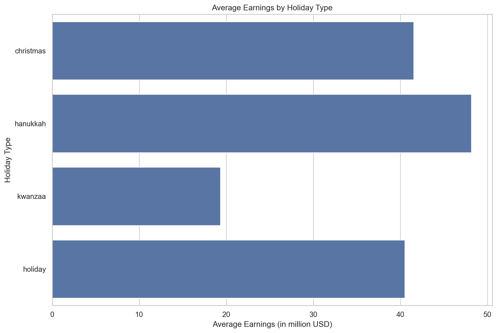
The bar chart illustrates that hanukkah-themed movies are the highest earners, followed by films about christmas in general. Movies about Holiday and Kwanzaa have notably lower average earnings, suggesting that hanukkah films are the most commercially successful within holiday genres.
Discussion:
Several insights on the Christmas film industry are revealed by the analysis. First off, a noticeable spike in film releases occurs between 2000 and 2020, suggesting a rise in recent decades’ worth of production. Second, audience tastes are important; higher-rated films are associated with higher revenues, even if there is no clear pattern connecting movie runtime or title length to earnings. Additionally, the most popular holiday films are mostly in the comedy and drama genres, indicating a predilection for happy, uplifting tales throughout the holiday season. Unexpectedly, the highest-grossing films are those with a Hanukkah theme, demonstrating the commercial feasibility of a variety of holiday storylines.